I make brands that talk back, campaigns people forward to their mums, and words that sit quietly in the spaces between.
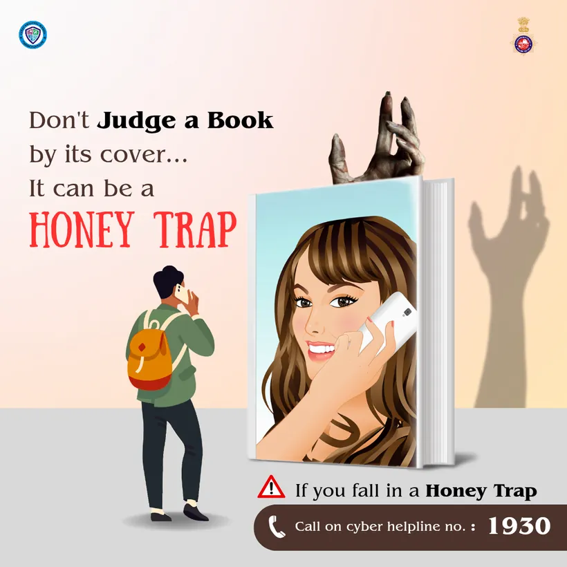
Cyber CellHomeKraftedIndian Cart Story
Brand identitySocial campaignsBrand strategyPrint and packagingCopywritingPoetryBrand identitySocial campaignsBrand strategyPrint and packagingCopywritingPoetry
Five brands, five very different rooms. Come in, look around.
Food / Social campaigns
HomeKrafted
Ghar ka khaana, roz ka bharosa. A kitchen brand that talks in Hindi, Punjabi and a lot of film references.
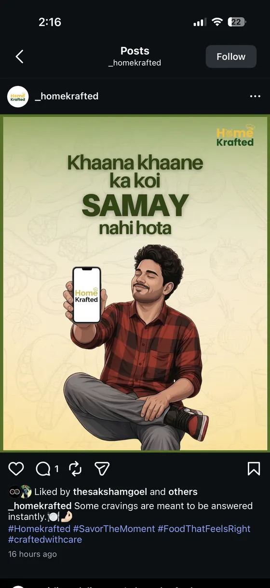
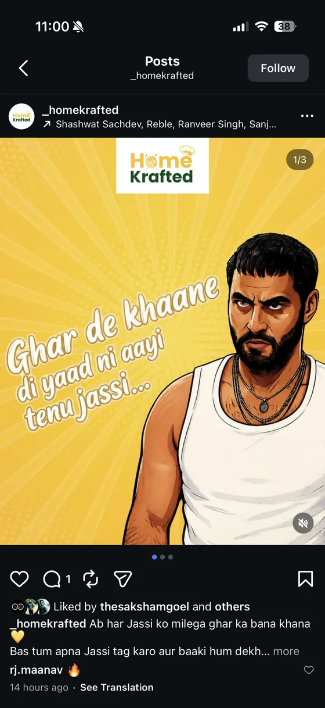
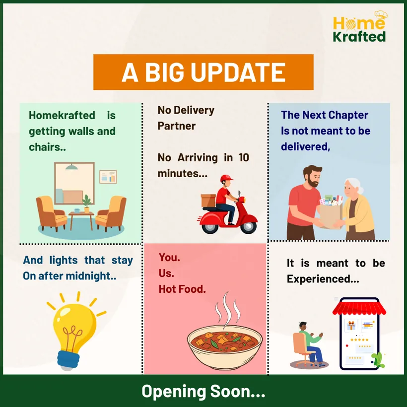
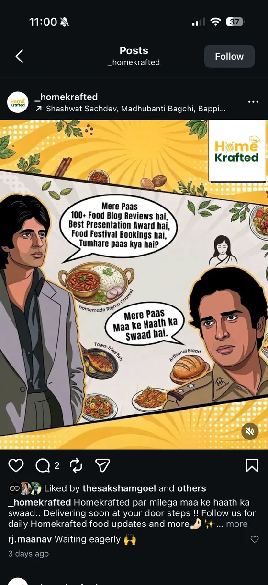
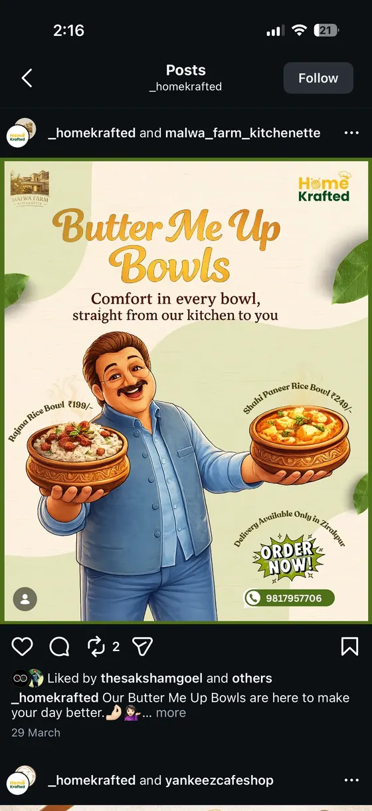
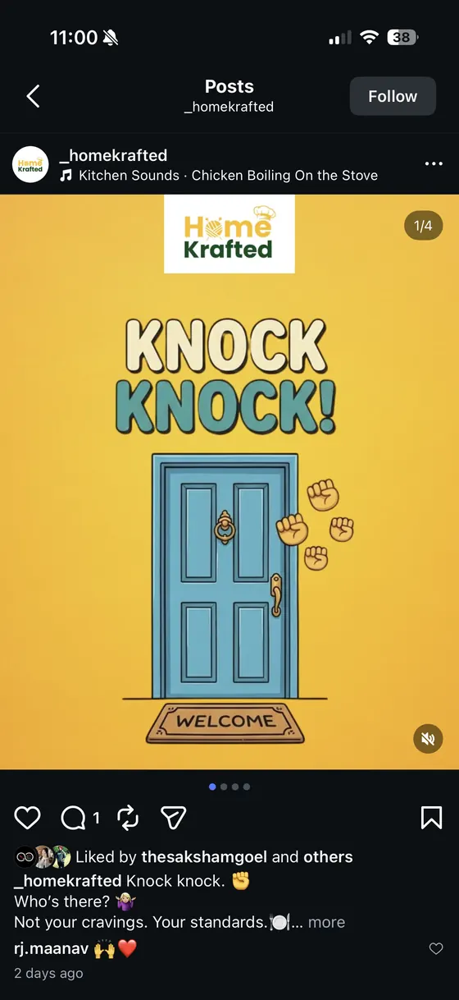
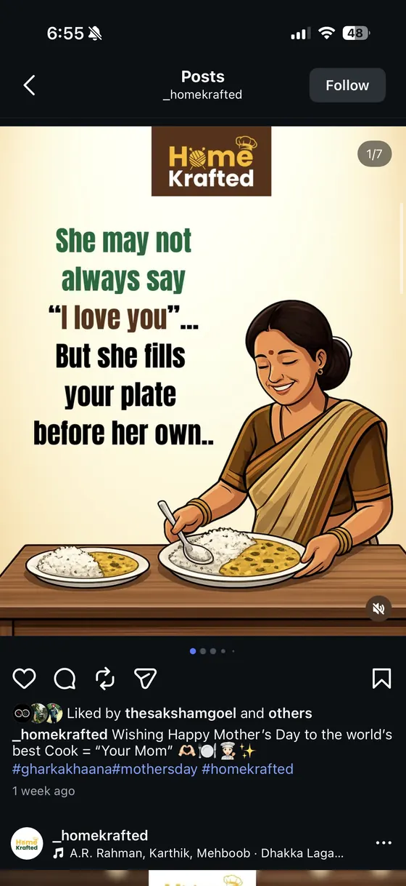
Spices / Instagram stories
Cent Spices
What happens when mustard seeds start crackling? A question on every story, a taste in every answer. Curiosity does the selling.
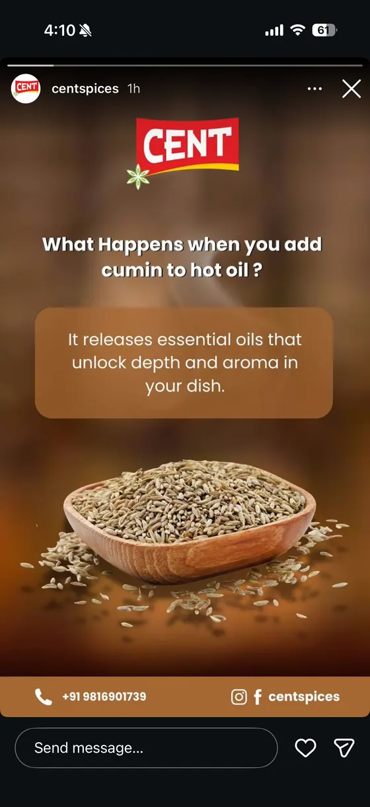
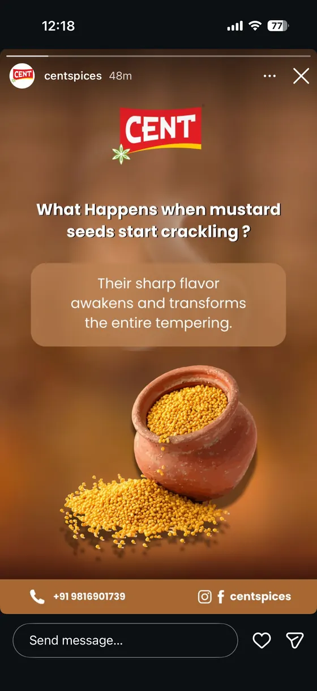
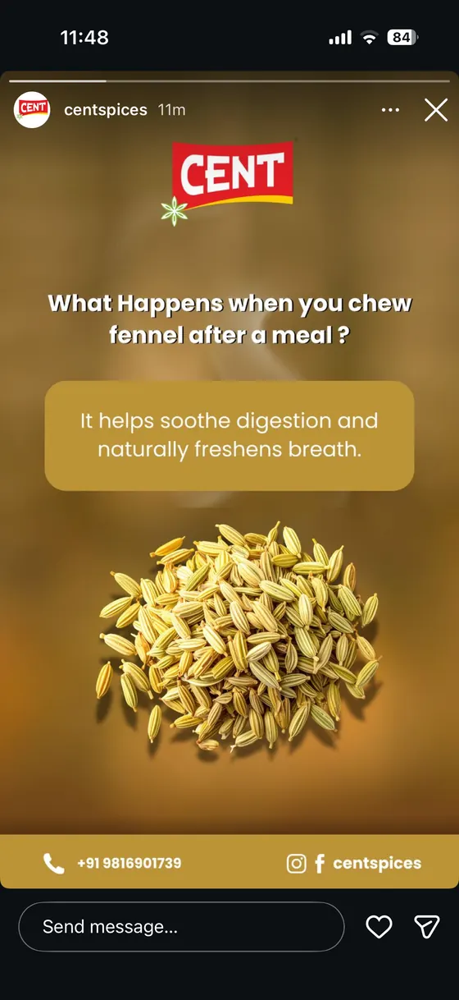
Wellness / Yoga
Slow down.The brand breathes too.
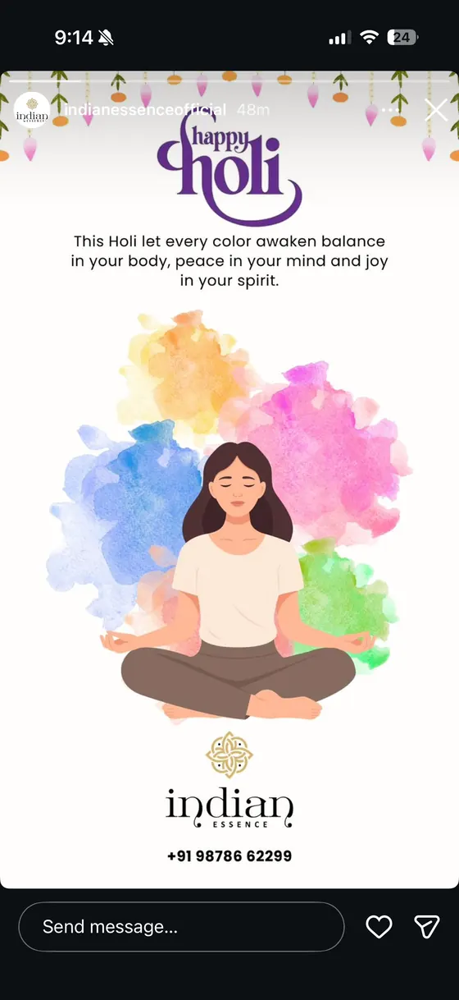
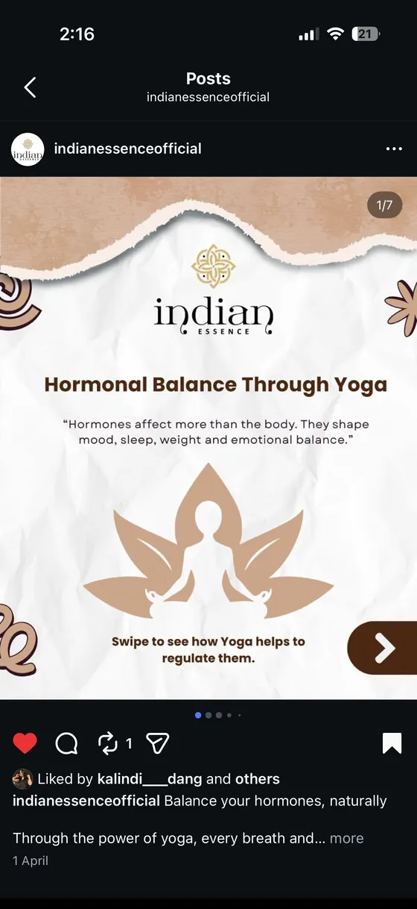
Indian Essence. Earth tones, generous space, a typeface with a pulse.
Public awareness / Cyber safety
Design that keeps you safe
Serious subjects, easy to read. Posts made for the Chandigarh Cyber Cell audience, built so a worried parent understands them in three seconds. On a computer, drag the cards around.
Once June rolled around, the anticipation of heading to Nani's house filled my heart. The last day of May seemed to drag on forever as I eagerly awaited the moment when I could pack my bags and embark on the journey to Nani's place. The morning of our departure was always bustling with activity. Mom would be busy packing our essentials while my sister and I gathered our favourite belongings in excitement.
Finally, we would hop on the bus, ready to set off for Nani's house. Arriving at Nani's house was always a moment filled with pure joy. The sight of her welcoming smile along with the warmth of her embrace made us feel instantly at home. For Mom it was a precious reunion with her mother after what seemed like an eternity.
Nani's house was a sanctuary where we could roam freely, sleep in as late as we wanted, and indulge in our favourite homemade delicacies crafted lovingly by Nani and Mami. We would spend hours chatting with Mami, listening in awe to the ancient tales by Nani and Nanu about their life's adventures and struggles. The best part was sleeping on the terrace under the sky full of stars, which rendered a feeling of contentment and happiness.
Reuniting with cousins meant endless hours of playtime, silly fights over TV shows and cartoons, and making new friends among Mom's friends' children. Although these friendships were fleeting, they left a lasting imprint on our childhood manners.
Accompanying Nani to the market to buy treats and new clothes was always a highlight, filled with laughter and excitement. But as the day before our departure dawned, a wave of bittersweet emotions washed over us. I would wander through every corner of Nani's home, trying to etch every memory into my mind, and I also captured those memories in my camera so that later, upon reaching home, I could feel the essence of good times.
The morning of our departure, boarding the train from Nani's house was and has been the toughest farewell I have ever experienced in life till date. While I travelled through the day, I could smell the petrichor, and all the sowed crops unfurled in a way as if they were biding me adieu. And when our journey ended and our stop arrived, I stepped down from the train and saw it for one last time until I boarded it again, next time, next year.
Today, as I look back on those summers, I realise how much things have changed. The carefree days have been replaced by the stress of adult life, filled with deadlines and responsibilities. Yet the memories of "Nani ka Ghar" remain etched in my heart as a testament to the most joyous days of my life.
Sometimes I find myself yearning to stop time or to travel back to those moments of pure bliss, where the future seemed to be a distant friend and all that mattered was the joy of being surrounded by loved ones at Nani's home. Witnessing time pass steadily evokes a deep sense of nostalgia and longing for what once was. Years might have passed, but the essence of "Nani ka Ghar" lingers and is a persistent reminder of those stress-free days.
By Kitty Chawla
Peace, these days, feels like a celebrity sighting. Everyone claims they almost saw it once, somewhere between a yoga reel and a motivational podcast, but no one has actual proof. Our parents and grandparents had a simpler arrangement. When life misbehaved, they folded their hands and spoke to God. We, on the other hand, speak to bots, podcasts, playlists and occasionally to ourselves at three in the morning. One thing falls apart, a podcast comes to the rescue. The podcast fails, a song steps in. If nothing works, there is always scrolling, the emotional equivalent of chewing gum for the brain.
Everyone is under pressure. Corporate employees chase deadlines that multiply faster than mosquitoes in monsoon. Students are chasing grades like their life depends on it. Graduates are stressed about getting jobs. Interns are stressed about getting noticed. Researchers chase conclusions while wondering if their peace was misplaced somewhere between chapter three and caffeine. Basically, no matter what stage of life you are in, peace is not part of the syllabus.
We live in the age of constant hustle, where being busy is a personality trait and rest feels slightly illegal. Everyone is chasing something. Peace today is like a private island in the middle of the ocean. Everyone dreams of it, few can reach it and most only see it in someone else's pictures.
We scroll through social media watching people vacationing, healing and manifesting, and feel stressed not by our own sorrows but by other people's happiness. Someone else's calm beach photo can ruin our perfectly miserable day. We say we are antisocial, but the truth is we are selectively social. We have time to scroll reels, post vacation stories and like inspirational quotes, but replying to a message feels like an emotional investment we cannot afford.
We take social media breaks, go on trips for emotional detox and announce digital detoxes with great enthusiasm. The mind, however, refuses to cooperate. It continues to think about conversations, futures, past mistakes and imaginary arguments while the body is technically on vacation. Peace is promised, but anxiety insists on coming along as hand luggage.
Every second person now has mental health issues and every third person has become a therapist. Trust issues, situationships and relationships fall apart under the noble excuse of protecting one's peace. Ask why things ended and the answer is ready made. We turned toxic, so we mutually parted ways.
We complain about humans all the time, yet secretly want that one human who runs quietly in the background, needs no updates and never crashes.
In the middle of all this chaos, peace has not disappeared. It has just become extremely camera shy. It avoids notifications, ignores hustle culture and refuses to compete. Maybe peace does not come with background music or a caption. Maybe it shows up quietly when we stop performing stress like it is a full-time job.
Until then, we remain exactly what the times demand of us. Busy being stressed.
By Kitty Chawla
If there were an Olympic sport for unsolicited judgement, we as a society would bring home gold, silver and bronze, and then complain that the podium arrangement was not aesthetically pleasing.
We have developed a remarkable talent. We can scan a human being from head to toe in under seven seconds and deliver a full performance review without ever having met them. Too thin. Too healthy. Too loud. Too quiet. Too ambitious. Too comfortable. Too overdressed. Too underwhelming. It is almost impressive how efficiently we reduce complex, breathing individuals into bullet points of perceived inadequacy.
A girl walks into a room wearing bright lipstick. Someone whispers that she is trying too hard. Another walks in bare faced and is declared careless. A man speaks fluent English and is labelled arrogant. Another fumbles and is deemed incapable. The one who posts gym selfies is vain. The one who does not is lazy. There is apparently no correct way to exist without being audited.
What fascinates me is our collective obsession with packaging. We inspect bodies like we are quality control managers in a biscuit factory. We evaluate dressing style as though the fate of civilisation depends on whether someone paired sneakers with a kurta. Communication style is dissected with the seriousness usually reserved for constitutional amendments. If you are soft spoken you lack confidence. If you are assertive you lack manners. Somewhere in between lies the mythical personality that satisfies everyone, much like a mythical creature that no one has actually seen.
Meanwhile, we are each walking around with our own generous collection of flaws. Emotional baggage that could qualify for excess luggage fees. Insecurities we keep tucked away like expired coupons. Habits we promise to fix every Monday. Yet when it comes to others, we demand perfection as though we are placing a custom order with the universe. Fair complexion with confidence on the side. Intelligence without ego. Fashionable but not attention seeking. Successful but not intimidating. Human but only in ways that are convenient to us.
The irony is delicious. We are busy pointing out what is wrong with others while carefully avoiding mirrors, both literal and metaphorical. It is much easier to critique someone's outfit than to examine our own impatience. Simpler to mock someone's accent than to confront our own narrow mindedness. We call it concern, feedback, standards. Sometimes it is simply projection wearing a respectable outfit.
Social media has only upgraded our judgement to high speed broadband. A single photograph can invite a parade of opinions. Who asked for them is a question that remains unanswered. We scroll through curated lives and become instant experts on how others should live, love, eat, work and age. We forget that behind every filtered picture is a person navigating life with the same messy uncertainty we privately endure.
Perhaps the real issue is that judgement offers a temporary illusion of superiority. For a fleeting moment, by highlighting someone else's perceived shortcomings, we feel taller. More sorted. More evolved. It is a quick ego snack. Unfortunately it is as nutritious as junk food and just as addictive.
Imagine if we redirected even half that energy inward. Not in the self-critical, spiral-into-despair way. But in the honest, gentle way. What if before commenting on someone's body, we examined our own relationship with insecurity. Before dismissing someone's intellect, we questioned our own willingness to learn. Before laughing at someone's dressing style, we asked why difference unsettles us.
We are all imperfect drafts, constantly under revision. Expecting others to be final editions while we ourselves are scribbled with corrections is not only unfair, it is faintly absurd.
So the next time the inner judge prepares to pass a verdict on someone's appearance, outfit or articulation, perhaps we could pause. Take a breath. Remember that we too are someone else's seven-second assessment waiting to happen.
A little less scrutiny, a little more grace. After all, none of us came with a user manual. We are all figuring it out, one flawed, fabulous day at a time.
By Kitty Chawla
There was a time when love grew like a shy plant on a sunny balcony. It needed patience, quiet moments and the occasional watering of attention. People wrote letters that smelled faintly of perfume and hope. A flower tucked in a notebook could make someone blush for a week. Romance was gentle and private, the emotional equivalent of slow cooking.
Today, love feels like a dish prepared for a cooking show. It is marinated, plated, garnished and then offered to the world for approval. Loyalty may be low on the national inventory, but admiration for grand gestures is at an all-time high. The same people who forget to reply to their partners for hours turn into soft puddles when they see Virat Kohli kissing his wedding ring on the field for Anushka Sharma. They say we want a love like that, without pausing to check if they possess even half the commitment, not to mention the stamina to run between wickets.
It is quite a paradox. We want the romance of Veer Zaara without the patience of waiting at a border. We want the sweetness of Aditya Kashyap from Jab We Met, but we often behave like someone who went to the gym, pulled an emotional muscle and came out as Kabir Singh. Even Prem from Ajab Prem Ki Gazab Kahani, who once could not confess his feelings without tripping over his own sincerity, has transformed into an animal who can growl, glare and slap his partner. Love on screen has become a high voltage appliance. Touch at your own risk!
Romance is now less about connection and more about choreography. Weddings look like film sets. Couples rehearse their "natural moments" as if spontaneity were a syllabus subject and they were to be graded by online evaluators.
Everyone wants to recreate the love story of a celebrity without realising that most of these stories come with editors, lighting experts and professional makeup artists. It is like expecting your home made paratha to look like a five star roti and then blaming the atta for having trust issues.
Sometimes social media turns love into a headline. Palash Muchhal's dreamy proposal to Smriti Mandhana on the very field where she won the World Cup made everyone swoon online, only to remind us that even the most spectacular declarations can disappear faster than a trending audio clip.
Even music tells us how much we have changed. From Kishore da singing "pal pal dil ke paas" like a man confessing to the moon, we now have "Saiyaara tu to badla nahi hai mausam zara sa rutha hua hai", which sounds like someone trying to negotiate emotional distance over a very patchy network.
Earlier, even obscenity was politely hidden behind flowers. Today, web series dissect intimacy with the enthusiasm of someone tearing gift wrapping paper. Privacy is treated like land in a crowded city. Everyone wants a piece of it but no one knows how to protect it.
And then there are the rare stories that remind us what love can look like when no one is watching. Think of Dimple Cheema, who loved Captain Vikram Batra with a quiet certainty that needed no ceremony and no audience. Her devotion was not curated for approval. It was simply lived, steady and unwavering, untouched by the noise that surrounds us today.
Beneath the noise, our hearts remain strangely old fashioned. We still want sincerity, even if we are slightly embarrassed to admit it. We want someone who chooses us without needing a camera to record, a ring to kiss or a trending reel to prove it.
Love still exists. It whispers in the quiet moments, avoids the cameras, skips the hashtags, and somehow manages to be infinitely more satisfying than any viral moment.
By Kitty Chawla
She steps out of her house before the sun rises, her broom resting on her shoulder. The streets are silent, the city still asleep, but she is already at work. The cold morning air offers little comfort, knowing that by midday, the heat will become unbearable. She begins sweeping, her movements mechanical, practised over thirteen years. Dry leaves and dust swirl around her feet as she clears the roads that will soon be filled with hurried footsteps and moving vehicles. Her family of four depends on her income, yet the salary barely covers the essentials. There is no luxury, no savings, no security, just survival. Education was never an option for her, but she dreams of a different future for her children. She wants them to study, to have better jobs, to escape the struggles she has known all her life. Across India, nearly 5 million sanitation workers share this hope, many of them women from marginalised communities who face the harshest of realities every day.
Her work is endless, but recognition is rare. Some people treat her with kindness, but many do not. They walk past her without acknowledgement, some even looking at her with disgust. When she tries to participate in a moment of joy, perhaps asking for a small token during someone's celebration, she is met with sharp words: "Don't you get a salary?" The sting of those words lingers long after they are spoken. Spring brings the hardest days. More leaves fall, the workload doubles, and the festivals that bring joy to others only add to her burden. She and her co-workers were promised extra pay for their additional efforts during the lockdown, but that promise was never fulfilled. The betrayal weighs heavily on her, yet she has no choice but to continue. There is no escape from this work, no opportunity to pause, even when she is unwell.
"No matter how sick we are, no matter how hot or cold it is, we must work. There are no holidays for us."
The complaints never stop. If the streets are dirty, they are blamed. If the work is not done fast enough, they are scolded. "If the roads are dirty, we get scolded. No one ever thanks us, only complaints," she says, shaking her head. There is no appreciation from the authorities, no sense of job security. Many of them work for years, hoping to become permanent employees, hoping to earn a pension so they will not have to rely on their children in old age. But for most, that hope remains unfulfilled. In India, despite legal bans on manual scavenging, enforcement remains weak, leaving workers like her vulnerable to exploitation.
The nature of sanitation work exposes women to severe health risks: respiratory disorders, infections, musculoskeletal problems. Studies show that despite these dangers, many sanitation workers are left without protective gear or healthcare access. The strain is unbearable, both physically and mentally. She remembers one of her fellow workers, a woman who had spent years in this job, waiting for it to become permanent. The stress of uncertainty, of struggling without a future, became too much for her. She suffered a heart attack and just like that, she was gone. "She died because she was worried about the future. No pension, no security, only struggle," she says softly, eyes downcast.
Despite everything, she pushes forward, motivated by the thought of her children. "We want them to study, to get good jobs. We don't want them to end up like us," she says firmly. She sacrifices her own comfort, her own dreams, in the hope that they will have a life free from the hardships she endures every day. She promised her children she would take them to Mansa Devi temple. She still has not. There is always work, always another road to clean, always another pile of trash waiting for her hands. Her promises, like the city's, remain unfulfilled.
As she walks away, the dust settles behind her. The road is clean now, ready to be walked on, ready to be forgotten. She will return tomorrow, just as she has for the past thirteen years, unseen yet essential, hoping that one day, the world will see her not as just a worker, but as a human being.
But the question remains. Will she, and others like her, ever be seen?
By Kitty Chawla
Seventy seven years on, the tricolour still soars, yet for many its promise feels hollow. On paper we are sovereign; in reality, millions live in a brittle liberty where survival eclipses pride.
Small scale businesses, once the economy's backbone, gasp for air under inflation, corporate dominance, and abrupt policy shifts. Pandemic scars remain as raw materials grow dearer, compliance burdens multiply, and local markets vanish under online glare.
Education, once the great equaliser, now guards its gates. Families sink into debt for quality schooling as public institutions wither. For the rural child or urban poor, the ladder to mobility is being pulled away.
Dissent is muted, opposition mics silenced over Bihar polls and Operation Sindoor. Delhi's stray dogs are swept away, while rabies, waste, and humane care remain ignored. Even our disputes draw foreign arbiters. Academia bends to political mood, and caste still scripts destiny.
Natural disasters lay bare the cracks in governance. Floods submerge homes, displace families, and drown livelihoods, while those elected to serve grow weary of the very responsibility they once sought. The gap between leadership and the people widens, and faith in the democratic promise weakens.
We have the symbols of freedom but not always its substance. True independence is not marked by anniversaries alone, but by the dignity, security, and equality lived each day. Until that is realised, our freedom remains a work in progress.
By Kitty Chawla
Some friends walked beside us Until the road asked for space, No argument, no sudden storm Just a widening of pace.
The distance did not arrive at once It learned our daily air, It settled into common things A thought, a chair, a stair.
We miss them in an easy way Like evenings miss the sun, Not wishing daylight back again Just knowing it is done.
What once felt steady was often light, Like laughter held in time, They felt like constants in our lives Till growth redrew the line.
With passing years, we understood Why fewer paths feel kind, Peace does not need crowded rooms, Just a clearer, steadier mind.
So we walked on, both shaped and free By roads that could not stay, Unsaid goodbyes did not break us They taught us how to stay.
By Kitty Chawla
When missiles blaze and drones descend, Our heroes rise, our skies defend. Through grids of fire, they hold the line, With grit and grace, their courage shines.
They bear the weight we cannot see, So we can live and still be free. With every breath, they stake their claim, Not for glory, but in our name.
Let not our voices turn to noise, But rise with truth, in one clear voice. No room for lies, no space for hate, Let unity decide our fate.
Do not spread the unconfirmed, Let facts be heard, not chaos churned. Let every post, each whispered word, Reflect the care our hearts have stirred.
When sirens sound and fear is near, Stay calm, stay safe, hold loved ones dear. Pray for the lives on border land, May peace and safety hold their hand.
Hold close your kin, your neighbor too, For strength is born when hearts are true. The soldier fights, but so must we, With courage, trust, and empathy.
Salute to those who guard our land, so fearless, firm, and true, Sons and daughters of Bharat Ma, we owe our peace to you.
Let's stand as one, firm, awake, For country's soul is ours to make. And when peace dawns beyond this night, We'll rise together, wrapped in light.
Photographs and words by Kitty Chawla
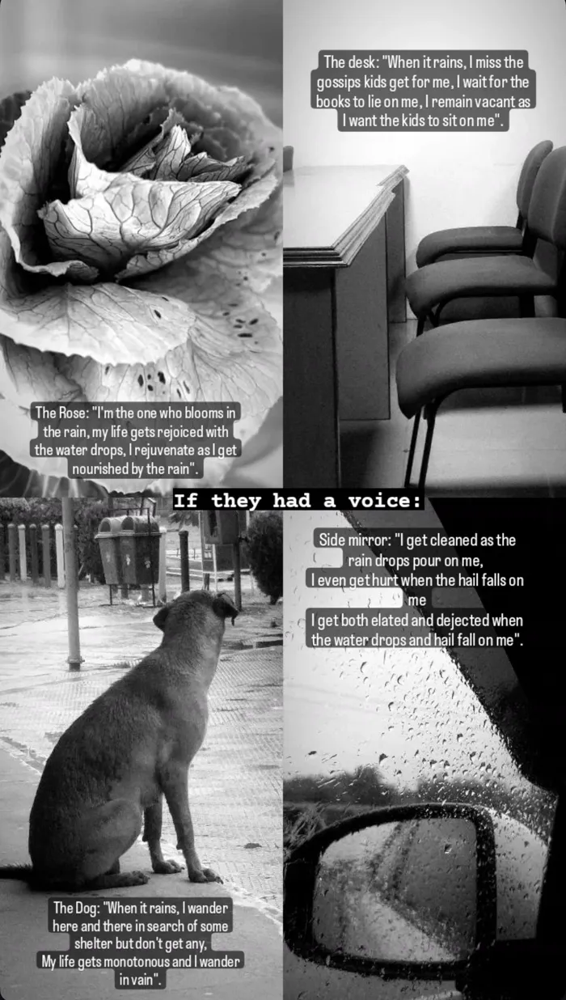
What would the things around us say if they could speak on a rainy day?
The Rose: "I'm the one who blooms in the rain, my life gets rejoiced with the water drops, I rejuvenate as I get nourished by the rain."
The Desk: "When it rains, I miss the gossips kids get for me, I wait for the books to lie on me, I remain vacant as I want the kids to sit on me."
The Dog: "When it rains, I wander here and there in search of some shelter but don't get any. My life gets monotonous and I wander in vain."
The Side Mirror: "I get cleaned as the rain drops pour on me. I even get hurt when the hail falls on me. I get both elated and dejected when the water drops and hail fall on me."
Concept and story by Kitty Chawla
FADE IN:
EXT. STREET. The opening scene starts with three girls bidding adieu to each other as they part ways. The girls leave and the camera focuses on one girl (Girl 1, the main lead) walking alone. A few miles away, Girl 1 comes across two boys, who are approaching her.
BOY 1 (smirking, with mean intentions) takes a handful of colour from his friend, walks towards the girl and throws it on her face.
GIRL 1 (angrily): Ye kya badtameezi hai?
BOY 1: Bura na mano, Holi hai!
The girl feels a little uncomfortable, but gathers courage and gives a fitting reply.
GIRL 1 (courageously): Holi hai to badtameezi karoge? Bura manungi, Holi hai.
BOY 1 shakes his head with shame, with a realisation.
The scene ends with the girl walking with confidence while the two boys keep looking at her as she walks.
FADE OUT.
Closing text on screen
"Holi is a festival of colours and joy, but it should never be an excuse for sexual harassment. Ignoring it and getting suppressed is not okay. Raise your voice and take a stand for yourself. Iss Holi, bura manenge."
"Legal punishment for sexual harassment during Holi: imprisonment for up to 3 years and a fine under Section 354A of the Indian Penal Code."
"Say no to eve-teasing during Holi. Report any such incidents to the authorities."
Helpline numbers: Women's Helpline 181, National Commission for Women 1091.
By Kitty Chawla
In an era governed by velocity, valuation and visibility, there remains one asset that quietly outperforms every metric on the balance sheet: trust. Markets fluctuate. Attention spans diminish. Trends expire with startling haste. Yet trust compounds. It does not erode with time; it strengthens through consistency, integrity and delivery.
Organisations often put a lot of money into growth strategies, performance marketing, and expansion stories. Few invest equally in credibility. Yet credibility quietly drives lasting success. It affects investor confidence, customer loyalty, employee dedication, and stakeholder goodwill in ways that no advertising budget can match.
Trust is built slowly but can be lost in an instant. It grows through honest communication, ethical choices, and the bravery to put principles before quick gains. In leadership, it shows as reliability. In brands, it comes through as authenticity. In institutions, it appears as legitimacy. What sets respected companies apart from those that are just visible is not just size, but steady character. When promises are kept, when accountability is accepted, and when values are firm, trust stops being just an idea and becomes valuable capital.
In a hyperconnected world where scrutiny is constant and memory is permanent, trust is no longer optional. It is foundational. It is the only currency that appreciates with disciplined stewardship and depreciates only through neglect.
Those who understand this do not chase applause. They cultivate assurance. And in doing so, they build reputations that outlast cycles, crises and competition. Because while markets may correct, and narratives may shift, trust remains the ultimate reserve of enduring influence.
By Kitty Chawla
Public relations often suffers from a narrow view. Many see it as a tool that only comes into play during a crisis, acting as a defence when a reputation is in danger. This view is not just incomplete; it is severely limiting. PR is not a fire extinguisher hanging on the corporate wall, to be used only when there is a fire. It is the plan for how an organisation is understood, remembered, and trusted.
Narrative architecture starts long before any controversy arises. It involves intentionally building identity, values, and voice. It defines what a company does and what it stands for. It shapes perception with foresight instead of just reacting urgently. In a world full of information and opinions, silence creates confusion. Confusion invites speculation. Effective public relations ends that void. It creates clarity, consistency, and credibility at every point where stakeholders interact.
The most resilient organisations do not communicate sporadically. They communicate strategically. They articulate purpose with precision. They align leadership messaging with institutional values. They ensure that every public statement reinforces a coherent and credible narrative. When crisis inevitably arrives, as it often does in dynamic markets, a well-constructed narrative does not collapse. It absorbs pressure. It provides context. It allows the organisation to respond from a position of established trust rather than fragile optics.
Damage control is reactive. Narrative architecture is proactive. The former aims to contain issues. The latter builds commitment. PR, when done well, is not about spinning stories. It is about managing reputation. It involves maintaining credibility. It focuses on the long-term story an organisation chooses to share with the world.
PR at its finest is not about spin. It is about stewardship. Stewardship of reputation. Stewardship of credibility. Stewardship of the long-term story an organisation chooses to tell the world. Those who reduce it to crisis management misunderstand its power. Those who treat it as narrative design understand that perception, when shaped with integrity and foresight, becomes one of the most formidable strategic assets a brand can possess.
By Kitty Chawla
The apprehension is not without reason. Each technological inflection point rekindles the same uneasy inquiry: who stands to be displaced?
Artificial Intelligence has undoubtedly altered the mechanics of our industry. It accelerates research. It refines data. It drafts, analyses and optimises with astonishing efficiency. To ignore its capability would be intellectual complacency. However, tools have never replaced excellence; they have only improved it. Agencies were never designed to compete solely on speed, volume, or templated output. If those are the only factors that matter, then the risk of failure was clear long before AI showed up.
Technology cannot replicate judgment. It cannot sense cultural nuances with lived experience. It cannot build trust in a boardroom through human conviction. It cannot navigate complex stakeholder feelings with emotional intelligence. It does not bear accountability in the way that leadership must.
AI will set a new standard. It will remove repetitive mediocrity, shorten timelines, and address inefficiency. But it will not replace strategic imagination, ethical judgment, or the courage to suggest bold yet responsible ideas. The real threat is not artificial intelligence but intellectual stagnation. It is agencies that depend on predictable thinking, recycled frameworks, and comfort in routine.
Those who grow, who integrate technology without losing human insight, will not fade away. They will become sharper, faster, and more knowledgeable. In every disruptive era, one principle remains true: excellence adapts while mediocrity resists. And resistance, not innovation, ultimately fades into irrelevance.
AI is not the enemy; it is the tool. The results depend entirely on the quality of the people who use it.
By Kitty Chawla
Creativity is not decoration. It is problem solving with imagination. If it does not move business metrics, it is art. If it moves markets, it is strategy.
In a fragmented media world, integration is not optional. Your ATL, BTL and Digital must speak the same language. Consistency builds memory. Memory builds brands.
A 360 degree approach is not about doing everything. It is about connecting everything. Strategy without execution is theory. Execution without strategy is noise.
AI will not replace agencies. But agencies that understand AI will replace those that do not. Technology is an accelerator. Strategy is still the driver.
Advertising does not create demand from nothing. It amplifies relevance that already exists. If the product is weak, the campaign will only reveal it faster.
In today's digital first world, social media marketing plays a crucial role in driving business growth. It is where brands build visibility, create conversations, influence decisions, and establish long term relationships with their audience. From brand discovery to final purchase, social platforms shape every stage of the customer journey. Mantrin proudly stands as the best social media marketing services in the region, helping businesses transform their online presence into measurable growth. This is why businesses looking to scale strategically are investing in the best social media marketing services in Chandigarh to stay competitive and relevant in an ever evolving market.
Social media today is not just about presence but about purpose. Customers expect authenticity, consistency, and value from brands they follow. Mantrin understands this shift and helps businesses create meaningful digital experiences that resonate with their audience. With a deep understanding of consumer behaviour and platform dynamics, Mantrin ensures brands do not just exist online but grow with impact.
Strategy That Converts Attention Into Growth
Mantrin approaches social media marketing with clarity and intent. Instead of random posting, the team focuses on building a structured roadmap aligned with business goals. Every strategy begins with audience research, market analysis, and brand positioning to ensure communication is relevant and effective.
Whether it is Instagram for visual storytelling, Facebook for community engagement, or LinkedIn for professional branding, Mantrin ensures a consistent brand voice across all platforms. This strategic execution helps businesses strengthen credibility and build lasting connections with their audience.
Creativity That Builds Strong Brand Recall
In a crowded digital space, creativity is what separates brands from competitors. Mantrin brings together designers, content creators, and strategists who understand how to craft visually compelling and emotionally engaging content. Every creative asset is designed to capture attention and inspire interaction.
Mantrin believes creativity must always support strategy. Their content not only looks appealing but also communicates value. This balance of design and storytelling helps brands remain memorable and relevant in the minds of their audience.
Data Driven Campaigns With Measurable Results
Growth driven marketing requires constant evaluation. Mantrin adopts a data focused approach to monitor engagement, reach, audience insights, and conversions. Campaigns are optimised continuously to ensure improved performance and higher returns.
Clients receive transparent insights that reflect real progress. By combining analytics with creative refinement, Mantrin delivers campaigns that generate tangible business outcomes and long term digital growth.
Industry Expertise That Strengthens Execution
With experience across industries such as real estate, education, retail, wellness, and corporate sectors, Mantrin understands diverse consumer mindsets and business challenges. This allows them to tailor strategies that align with specific industry needs and audience expectations.
Whether launching a new product, promoting a service, or strengthening brand identity, Mantrin adapts its approach to support sustainable growth and brand authority.
Integrated Digital Solutions for Complete Online Presence
Social media success works best when supported by a strong digital ecosystem. Mantrin offers a complete range of services including search engine optimisation, paid advertising, content marketing, branding, and online reputation management.
This integrated approach ensures consistency across all digital touch-points and helps businesses maximise visibility, engagement, and conversions through a unified strategy.
Partner With Mantrin for Sustainable Digital Growth
Choosing the right digital partner can redefine your growth journey. Mantrin combines strategy, creativity, and performance driven execution to help brands scale with confidence. Their client focused approach ensures personalised solutions aligned with long term goals.
If you are ready to strengthen your online presence, attract the right audience, and achieve measurable results, it is time to invest in digital marketing services in Chandigarh with Mantrin. With expertise and innovation, Mantrin helps businesses turn digital potential into lasting success, brand authority, and long term market leadership.